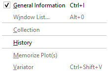
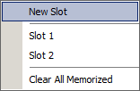

View Menu
View Menu
Navigation: OptiLayer Menu Commands > View Menu |
` <importxydata.html>`__ ` <idh_optilayer.html>`__ ` <idh_g eneral_information_window.html>`__ |
The View Menu allows you to display some frequently required windows.
 |
 |
General Information Opens the / General Information Window/ . You can also use the hotkey Ctrl+I to open the General Information Window.
Window List… Displays information on all open OptiLayer windows and allows you to activate any previously opened window (see / / / / OptiLayer Window List/ / / / ). This feature is also accessible by the Alt+0 keystroke.
Collection Displays the data stored in OptiLayer / / / Collection/ / / .
History Displays the data saved in OptiLayer / / / / History/ / / / .
Memorize Plot(s) Allows you to / / / / / memorize a plot/ / / / / at the currently selected window for further comparison with other plots.
Variator (Shift+Ctrl+V) Opens the / / / / / / Variator window/ / / / / / for the manual adjustment of layer thicknesses, refractive indices, and extinction coefficients.